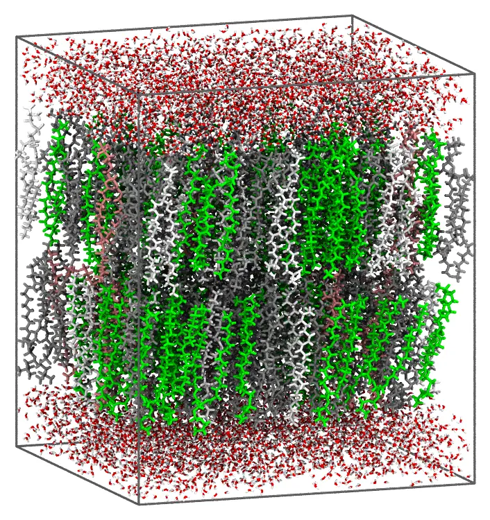
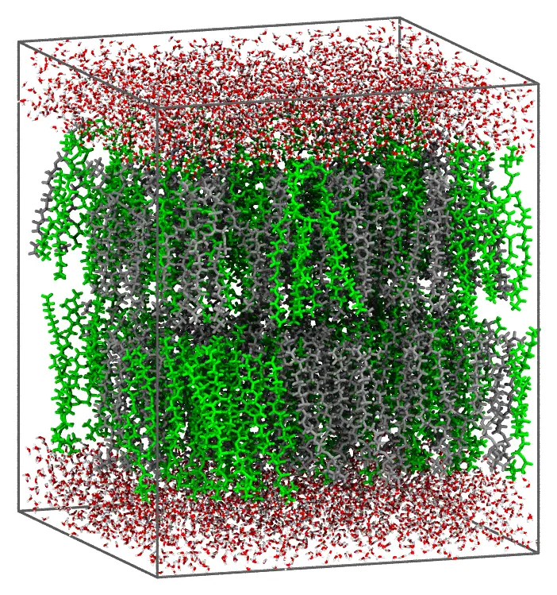

Membrane system
Membrane builds a lipid bilayer or monolayer under orthorhombic periodic boundary conditions, with the membrane normal along z. Seven common phospholipids are built in, POPC, POPE, POPS, POPG, DPPC, DOPC and DMPC: for them, only the composition and the size of the membrane are needed. Unlike the solvation recipes, every parameter is given in the Membrane constructor: write_packmol_input/packmol take only input/output (and, for packmol, any keyword of the packing engine).
Packmol.Membrane — Type
Membrane(;
lipids::Union{String,Vector{String}},
lipid_molar_ratio = nothing, # equal amounts if not given
total_lipids::Union{Nothing,Integer} = nothing, # xor total_area
total_area::Union{Nothing,Number} = nothing, # Ų, xor total_lipids
type::Symbol = :bilayer, # or :monolayer
area_per_lipid = nothing, # Ų, automatic for the built-in lipids
lipid_head = nothing, # automatic for the built-in lipids
lipid_tail = nothing, # automatic for the built-in lipids
lipid_molar_mass = nothing,
flexibility::Real = 0.15,
solvent = nothing, # water
solvent_molar_ratio = nothing, # equal amounts if not given
solvent_molar_mass = nothing,
solvent_layer_width::Number = 15.0, # Å
solvent_density::Number = 1.0u"g/mL",
)Setup a lipid bilayer or monolayer (type) of one or more lipids, mixed at lipid_molar_ratio, solvated by water or by a mixture of solvents. The system is built with orthorhombic periodic boundary conditions, with the membrane normal along z.
The lipids are the names of built-in lipids, "POPC", "POPE", "POPS", "POPG", "DPPC", "DOPC" and "DMPC", or PDB files. For the built-in lipids, only the composition and the size of the membrane are needed: for example,
Membrane(lipids = ["POPC", "POPE"], lipid_molar_ratio = [3, 1], total_lipids = 200)is a POPC/POPE 3:1 bilayer of 200 lipids in water.
The size of the membrane is given by exactly one of total_lipids (the number of lipids, summed over both leaflets of a bilayer) or total_area (Ų, the lateral area of the box), with area_per_lipid (Ų): by default (built-in lipids only), the molar average of the areas per lipid of the actual membranes (POPC 64, POPE 57, POPS 63, POPG 66, DPPC 63, DOPC 67, DMPC 61 Ų). Both leaflets of a bilayer have the same composition.
For a lipid given as a PDB file, lipid_head (the index of an atom of the polar head in the file) and lipid_tail (the indices of the atoms at the ends of its chains, a vector for each lipid, or a single index) must be given for all the lipids, in the order of lipids, and area_per_lipid too. Packing is fastest with straight, compact conformations, with the chains side by side, as the built-in ones.
The length L of each lipid is the distance from its head atom to the midpoint of its chain ends. The chain ends are packed within 6 Å of the middle of the bilayer (of the bottom of a monolayer), and the head above 6 Å + (1 - flexibility) L: flexibility (0 < flexibility < 1) sets how far from upright the lipids may be. Wider bands of the heads (larger flexibility) make the packing slower, or make it fail.
The solvent fills slabs of solvent_layer_width (Å) beyond the heads (above and below a bilayer, above a monolayer), of density solvent_density (g/mL by default), mixed at solvent_molar_ratio. By default, it is water at 1 g/mL. Molar masses are computed from the atom types in the PDB files if not given.
Packmol.write_packmol_input — Method
write_packmol_input(
system::Membrane;
input="membrane.inp",
output="membrane.pdb",
)Function that generates an input file for Packmol for a lipid membrane system.
Packmol.packmol — Method
packmol(
system::Membrane;
output="membrane.pdb",
kwargs...,
)Builds and packs a lipid membrane system, without writing an input file.
It is equivalent to calling write_packmol_input followed by packmol on the resulting file.
output behaves as in write_packmol_input. Any other keyword (nloop, iprint, seed, ...) is forwarded to the packing engine — see packmol(::PackmolSystem).
Returns the built PackmolSystem, with the packing outcome in its .status field — see packmol(::PackmolSystem).
A bilayer of a single lipid
A POPC bilayer of 128 lipids (64 in each leaflet), in water:
using Packmolsystem = Membrane(lipids = "POPC", total_lipids = 128)==================================================================
Membrane properties (bilayer):
==================================================================
Lipids: POPC
Lipid molar ratio (normalized): [1.0]
Lipid head-to-tail lengths: 26.02 Å
Solvents: water.pdb
Solvent molar ratio (normalized): [1.0]
Solvent density: 1.0 g mL^-1
Solvent layer width: 15.0 Å
Area per lipid: 64.0 Å^2
Total lipids: 128
Flexibility: 0.15
==================================================================The area per lipid is, by default, that of the actual membrane (64 Ų for POPC). The size can also be given by the lateral area of the box, total_area (Ų), instead of the number of lipids.
Generate the input file, or pack the system directly:
write_packmol_input(system; input = "popc.inp", output = "popc.pdb")==================================================================
Summary:
==================================================================
Membrane type = bilayer (2 leaflet(s))
Area per lipid = 64.0 Å^2
Box lateral area = 4096.0 Å^2
Periodic box = a = 64.0 Å, b = 64.0 Å, c = 90.242 Å
α = 90.0°, β = 90.0°, γ = 90.0°
Lipids (per leaflet, 64 total, 128 overall):
POPC: 64 per leaflet, head-to-tail length = 26.02 Å
Solvents (per slab):
water.pdb: 2054 per slab
==================================================================
Wrote file: popc.inp
==================================================================packmol(system; output = "popc.pdb")Mixtures
The molar ratio of the lipids is given by lipid_molar_ratio (equal amounts if not given). An anionic membrane of POPC, POPE, POPS and POPG, at 4:3:2:1:
system = Membrane( lipids = ["POPC", "POPE", "POPS", "POPG"], lipid_molar_ratio = [4, 3, 2, 1], total_lipids = 200,)write_packmol_input(system; input = "mixture.inp", output = "mixture.pdb")==================================================================
Summary:
==================================================================
Membrane type = bilayer (2 leaflet(s))
Area per lipid = 61.9 Å^2
Box lateral area = 6190.0 Å^2
Periodic box = a = 78.677 Å, b = 78.677 Å, c = 91.653 Å
α = 90.0°, β = 90.0°, γ = 90.0°
Lipids (per leaflet, 100 total, 200 overall):
POPC: 40 per leaflet, head-to-tail length = 26.02 Å
POPE: 30 per leaflet, head-to-tail length = 26.28 Å
POPS: 20 per leaflet, head-to-tail length = 25.8 Å
POPG: 10 per leaflet, head-to-tail length = 26.85 Å
Solvents (per slab):
water.pdb: 3104 per slab
==================================================================
Wrote file: mixture.inp
==================================================================Both leaflets have the same composition, and the area per lipid is the molar average of those of the lipids. The system packs in about 20 seconds with 14 threads, and looks like this (the lipids colored by type):

Lipids of different lengths are packed with their heads at their own heights, from the same middle of the bilayer. DPPC and DOPC, 1:1:
system = Membrane(lipids = ["DPPC", "DOPC"], total_lipids = 200)write_packmol_input(system; input = "dppc_dopc.inp", output = "dppc_dopc.pdb")==================================================================
Summary:
==================================================================
Membrane type = bilayer (2 leaflet(s))
Area per lipid = 65.0 Å^2
Box lateral area = 6500.0 Å^2
Periodic box = a = 80.623 Å, b = 80.623 Å, c = 94.625 Å
α = 90.0°, β = 90.0°, γ = 90.0°
Lipids (per leaflet, 100 total, 200 overall):
DPPC: 50 per leaflet, head-to-tail length = 25.66 Å
DOPC: 50 per leaflet, head-to-tail length = 28.6 Å
Solvents (per slab):
water.pdb: 3259 per slab
==================================================================
Wrote file: dppc_dopc.inp
==================================================================
A monolayer
With type = :monolayer, a single leaflet, with the heads toward the solvent above it:
system = Membrane(type = :monolayer, lipids = "DPPC", total_lipids = 64)write_packmol_input(system; input = "monolayer.inp", output = "monolayer.pdb")==================================================================
Summary:
==================================================================
Membrane type = monolayer (1 leaflet(s))
Area per lipid = 63.0 Å^2
Box lateral area = 4032.0 Å^2
Periodic box = a = 63.498 Å, b = 63.498 Å, c = 44.813 Å
α = 90.0°, β = 90.0°, γ = 90.0°
Lipids (per leaflet, 64 total, 64 overall):
DPPC: 64 per leaflet, head-to-tail length = 25.66 Å
Solvents (per slab):
water.pdb: 2022 per slab
==================================================================
Wrote file: monolayer.inp
==================================================================How the lipids are placed
The length L of each lipid is the distance from its head atom to the midpoint of the ends of its chains. In a bilayer, the ends of the chains are packed within 6 Å of the middle of the membrane, and the head of each lipid beyond 6 Å + 0.85 L from it, in the same way as in the bilayer tutorial: keeping the heads in a narrow band keeps the lipids upright, which is what makes them pack. The solvent starts 2 Å beyond the heads. The width of the band of the heads, 0.15 L, is the flexibility keyword: wider bands make the packing slower, or make it fail. A monolayer is packed in the same way, from the bottom of the box.
The built-in lipids are extended conformations, which pack well, but make a bilayer thicker than a relaxed one (and its area per lipid is that of the actual membrane): the equilibration of a molecular dynamics simulation brings it to its thickness.
Other lipids and solvents
Any lipid can be given as a PDB file, with the index of its head atom (lipid_head), those of the ends of its chains (lipid_tail, a vector for each lipid), and the area per lipid, for all the lipids (the built-in ones can be mixed with them, by name). Packing is fastest with straight, compact conformations, with the chains side by side, as those of the built-in lipids (the packmol_lipids set of MolSimTestFiles, which has 20 conformations of each). The solvent can be any mixture, with its molar ratios and density. Here, a single-chain lipid (its head atom is the 31st, the end of its chain the first) in water/ethanol:
test_dir = Packmol.RecipesDirectory * "/test"system = Membrane( lipids = "$test_dir/data/lipid.pdb", lipid_head = [31], lipid_tail = [1], area_per_lipid = 30.0, total_lipids = 100, solvent = ["$test_dir/data/water.pdb", "$test_dir/data/ethanol.pdb"], solvent_molar_ratio = [9, 1], solvent_density = 0.98u"g/mL", solvent_layer_width = 20.0,)write_packmol_input(system; input = "membrane.inp", output = "membrane.pdb")==================================================================
Summary:
==================================================================
Membrane type = bilayer (2 leaflet(s))
Area per lipid = 30.0 Å^2
Box lateral area = 1500.0 Å^2
Periodic box = a = 38.73 Å, b = 38.73 Å, c = 75.677 Å
α = 90.0°, β = 90.0°, γ = 90.0°
Lipids (per leaflet, 50 total, 100 overall):
lipid.pdb: 50 per leaflet, head-to-tail length = 11.57 Å
Solvents (per slab):
water.pdb: 765 per slab
ethanol.pdb: 85 per slab
==================================================================
Wrote file: membrane.inp
==================================================================